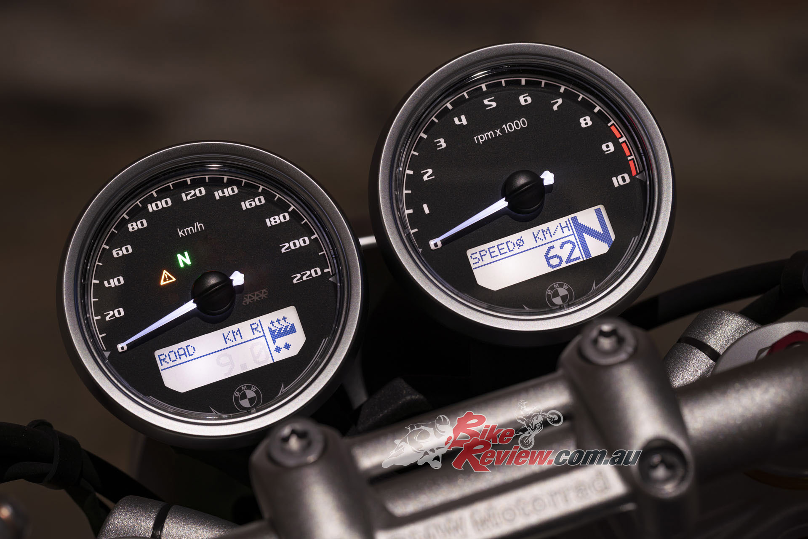
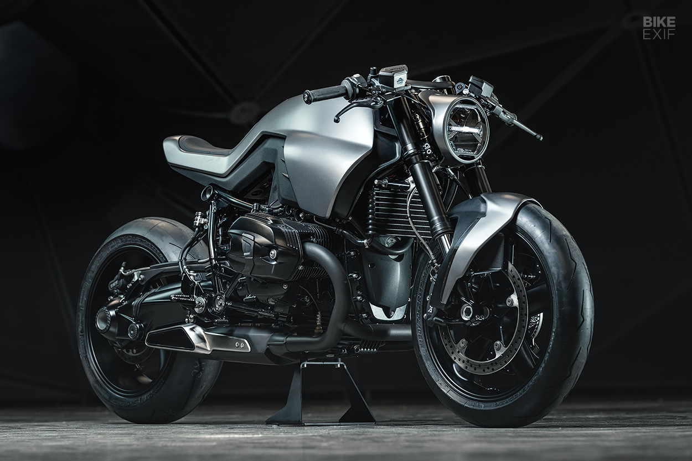
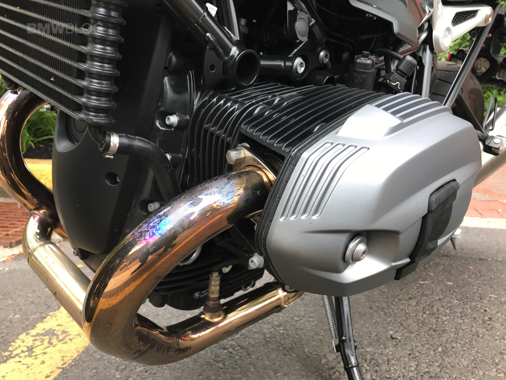
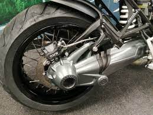

Classic looking design and close attention to little parts of it makes this bike very special. Just look on it's dash!

Different variations of original parts from BMW will help you build motorcycle that looks exactly like it was in your dreams.

The R nineT line of bikes are cool, classic standard bikes that stand out thanks to the powerful air/oil-cooled twin-cylinder boxer engine, drawing 109 hp from its 1,170 cc displacement.

Forget about chain maintenance or belt sloweness. Power reaches the rear wheel via a shaft drive, which means less maintenance and more fun!
The R nine T is a nimble ride and exudes quality at every touch. Brembo brakes with ABS, Akrapovic exhaust, and the slick single-sided swingarm, each component shows off BMW’s high build quality. The only real choice is to decide which model speaks to your soul.